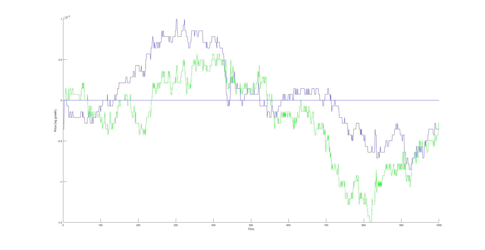
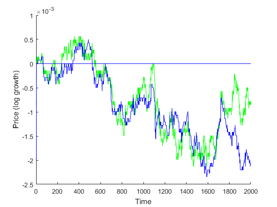
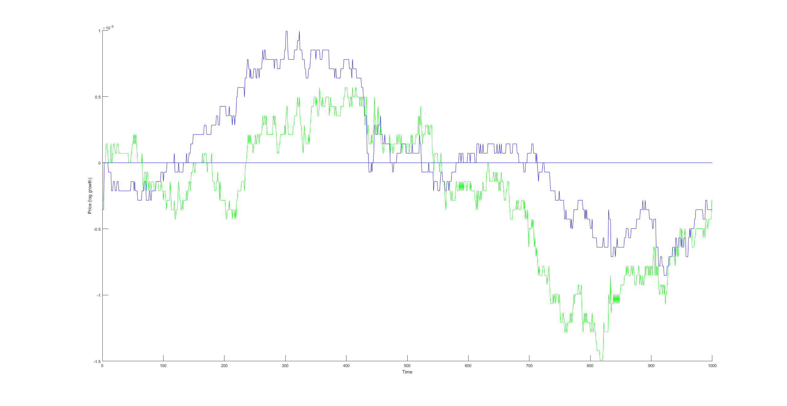
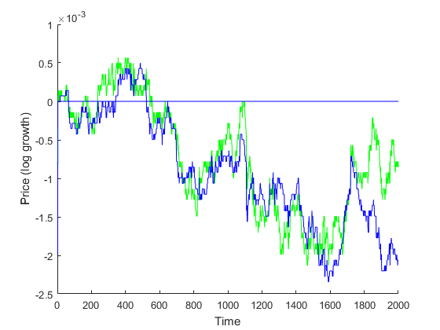
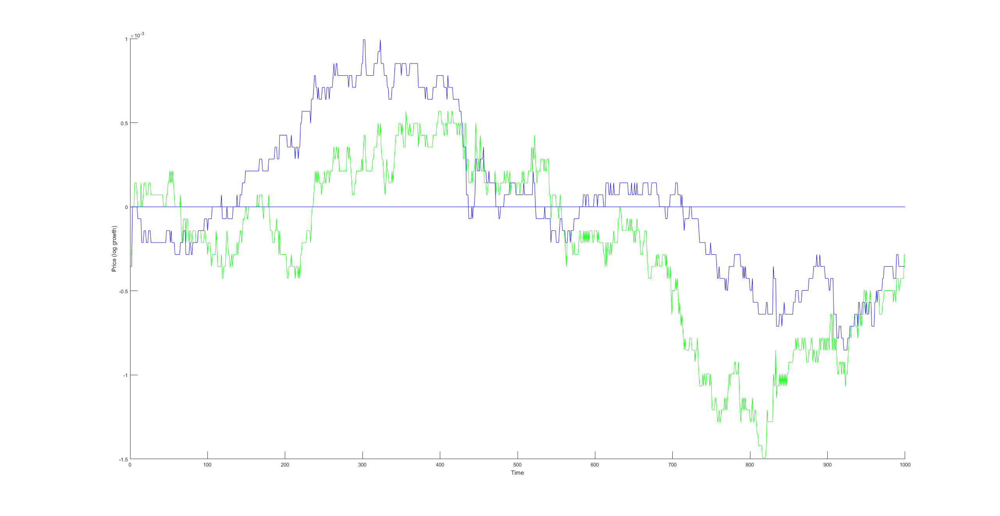
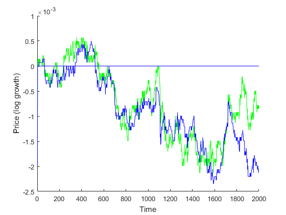

 
 Nate Diamant, Jeffrey Rutledge, Kyle Suver, Daniel Gorelik
Our project's goal is to evaluate the viability of modeling short term stock price patterns using a gaussian process with a trained spectral kernel. This work was inspired by previous work using a gaussian process with an RBF kernel to perform portfolio optimization. The portfolio optimization was performed using daily data. The trained gaussian process was used to the predict price of the stocks over the next day which would be used to rebalance the portfolio.
In this project we fit a gaussian process with a spectral kernel to minute data. The goal is to predict the price in the next couple of minutes. Then sell or retain the stock based on the prediction.
We believe the spectral kernel has better potential than the RBF kernel to predict future stock prices. The RBF kernel determines the covariance between data points based on their gaussian distance. A gaussian process using an RBF kernel is essentially limited to creating a model that thinks previous data's relevance to future data is entirely determined by the closeness. The spectral kernel allows for periodicity in the data. This allows a gaussian process trained using spectral kernel to think the process generating the data has some kind of periodicity. Meaning that a previous point at some time period away may be more relevant than a close point. This spectral kernel is trained using some kind of numerical optimization to maximize likelihood.
In order to test the viability of this modeling technique we have attempted to use the model to fit some of the data and inspected its performance.
We have also implemented a very simple strategy to perform some back tests. First, we train the kernel on some historical data and then we save the kernel for future use. This is necessary because training the kernel takes a couple minutes. Then we use this kernel and the past data to predict how the stock price will change in the next minute. If we predict it will rise we retain our stock, and if we predict it falls we will sell the stock.
This is trading model is neither practical or optimal and is used for its simplicity. The model is not practical because moving your entire holding of the stock every minute is going to have a lot of market friction. The model is not optimal because it only using a small amount of the model's prediction. A better model would probably be to use the model's prediction over the next several minutes and incorporate the model's confidence in its predictions.
Below are some examples of the log return ratio of this strategy in action. (If you start with x dollars and the final log return ratio was $r$ then you would end with exp(r) * x dollars.)
 